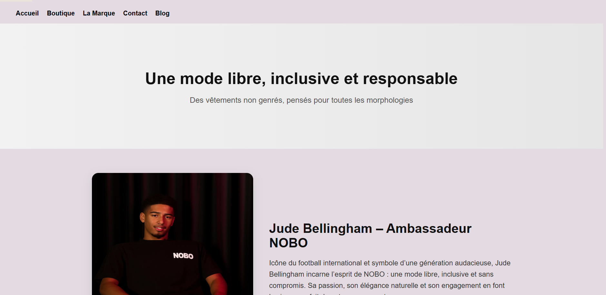

Mes réalisations
Projets menés durant ma formation BTS SIO SLAM et mes stages, allant du développement web à l'infrastructure réseau.
Application e-commerce NOBO
Objectif : Développer un site de vente en ligne de vêtements non genrés, avec catalogue produits, système de catégories et base de données relationnelle.
Mon rôle : J'ai été responsable de la création de la page d'accueil en HTML/CSS, de la conception du schéma de base de données MySQL et de la liaison entre le front-end et le back-end PHP pour l'affichage dynamique des produits.


Infrastructure réseau d'un établissement scolaire
Objectif : Concevoir une infrastructure réseau complète pour un établissement scolaire, incluant la topologie, le plan d'adressage IP et la configuration des équipements.
Mon rôle : J'ai réalisé l'intégralité du projet en autonomie — conception de la topologie, simulation complète sous Cisco Packet Tracer, configuration des routeurs, switches et VLANs, et rédaction du plan d'adressage IP.


Jeu du Pendu — application web éducative
Objectif : Créer un jeu interactif en JavaScript permettant aux utilisateurs de deviner des mots issus de différentes thématiques culturelles, dans un objectif ludique et éducatif.
Mon rôle : Conception et intégration de l'interface utilisateur (HTML/CSS), puis déploiement de l'application sur Netlify.


StockMyProducts — gestionnaire de stock en ligne
Objectif : Développer une application web permettant de gérer un stock de produits directement depuis le navigateur, sans backend — ajout, modification, suppression et consultation en temps réel.
Mon rôle : Conception de l'interface, développement de la logique JavaScript complète et gestion de la persistance des données via LocalStorage.
Fonctionnalités principales : ajout de produits (nom, quantité, prix, catégorie), modification et suppression, affichage dynamique du tableau, persistance des données entre les sessions, interface responsive.


Portfolio professionnel — Hawa Doucouré
Objectif : Concevoir un portfolio moderne, responsive et professionnel pour présenter mes projets, mes compétences et mon parcours dans le cadre du BTS SIO SLAM.
Mon rôle : J’ai réalisé l’intégralité du site : design, intégration HTML/CSS, animations JavaScript, organisation des pages, rédaction des contenus et optimisation de l’expérience utilisateur.